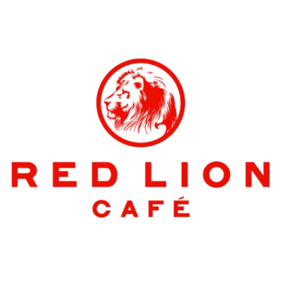
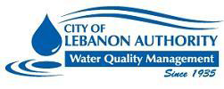

697 Deturksville Road, Pine Grove, PA 19605
Dishwasher/Custodial Staff | June 2015 - August 2021
Maintained a clean and sanitary environment for prepping food and foodstuffs
Maintained high standards of customer service during high-volume, fast-paced operations

Millersville University - The Anchor
Millersville University PO Box 1002 Millersville, PA 17551-0302
Food Prep/Custodial Staff | December 2019 - March 2020; August 2021 - Present
Maintained a clean and sanitary environment for prepping food and foodstuffs
Maintained high standards of customer service during high-volume, fast-paced operations.
Followed procedures for safe food preparation, assembly and presentation.
Assisted management with inventory control.
City of Lebanon Authority - Wastewater Treatment Facility
2311 Ridgeview Road, Lebanon, PA, 17042
Seasonal Landscaping/Custodial | August 2020; May 2021 - August 2021; May 2022 - August 2022
Assisted in maintaining a safe work environment for myself and my fellow employees
Provided basic lawn care to outdoor areas
Maintained the cleanliness of buildings and structures necessary for operations

WIS International
Inventory Associate | June 2023 - Present
Independently supervised small-scale recall locatiing events.
Assisted supervisors with set up/tear down of equipment.